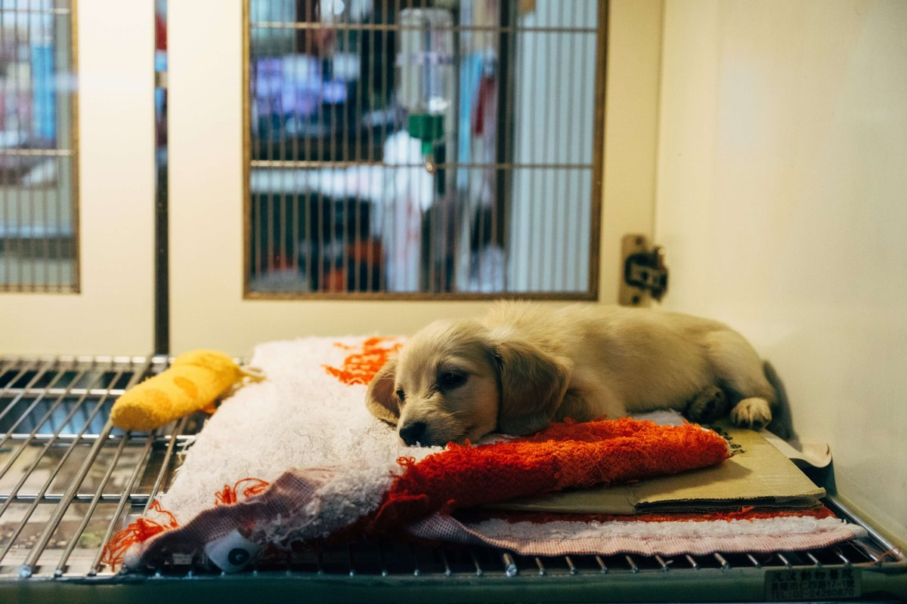

Founded in 2021, Cymru Animal Shelter is a family run business which looks to help our cats and dogs
find their loving, forever homes. We started our shelter as there were no other shelters which were
local, so we thought the need existed to help local animals and local people have a convenient
locations
to meet and fall in love. We have quickly become known in the local area and we invite you to join
our
small family in any way you can.
We keep the shelter going through money raised from charitable donations and our fundraiser events.
We
often have in excess of twenty cats and twenty dogs at any given time and they eat a lot! Also, we
ensure all of our animals have regular check-ups with the vets, booster shots and are all spayed. As
you
could imagine, the costs involved for this are also high. So, if you are in a position to help in
any
way then please get in touch with us via our social media pages. We also post all of our annual and
upcoming fundraising events on our fundraising page, so feel free to check that out too for some
awesome
events.